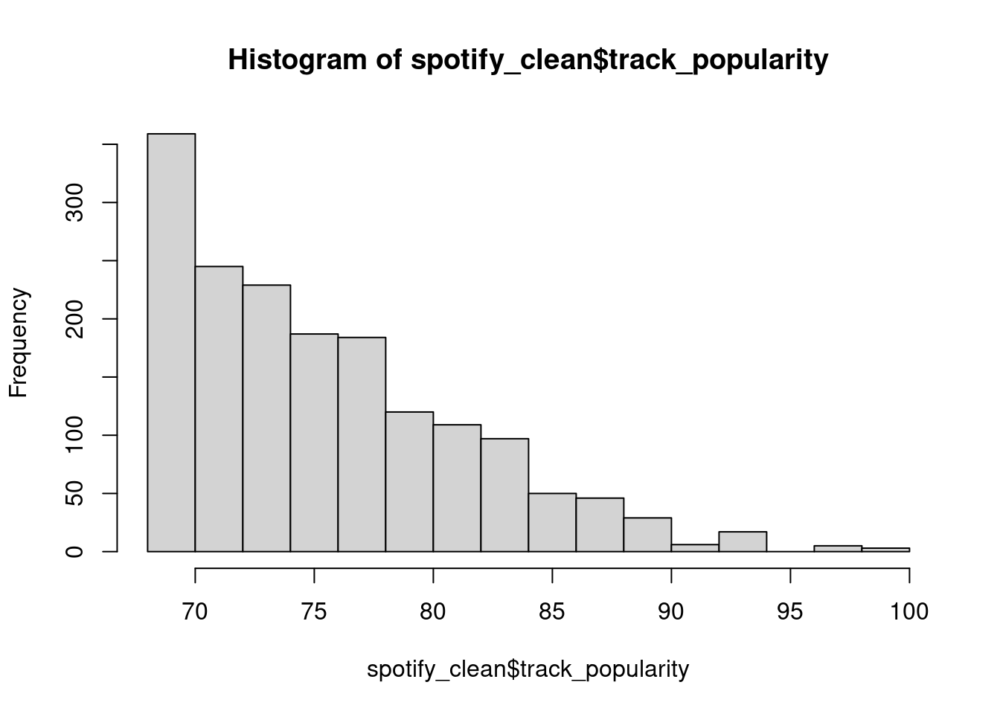
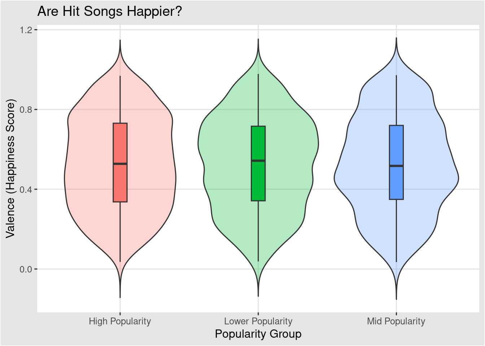
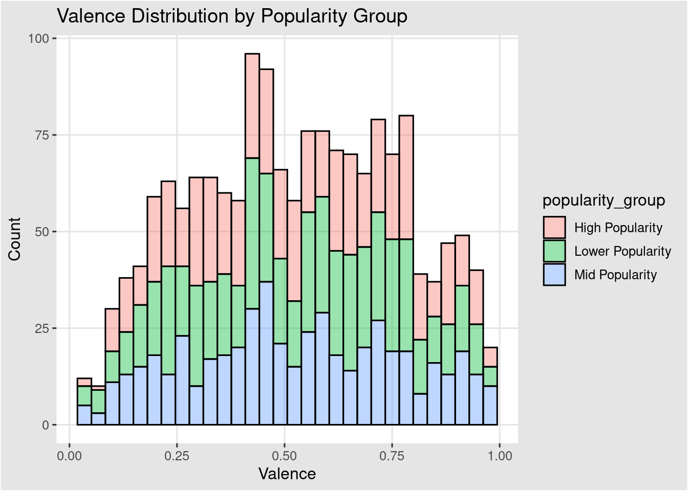
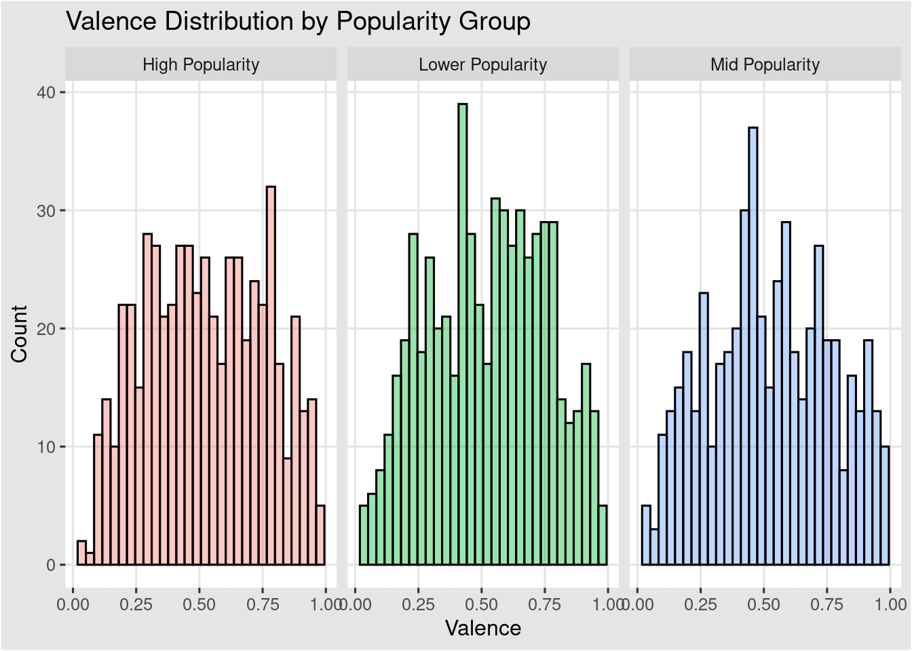
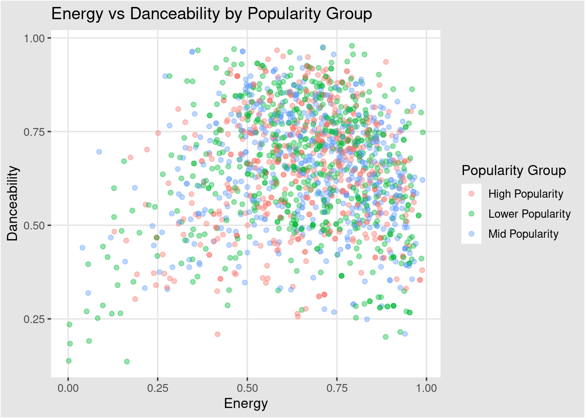
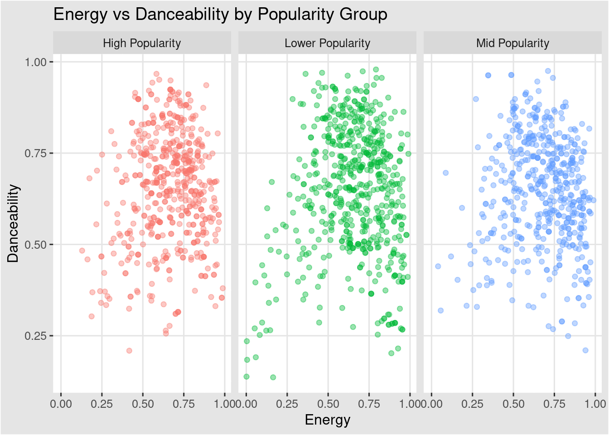
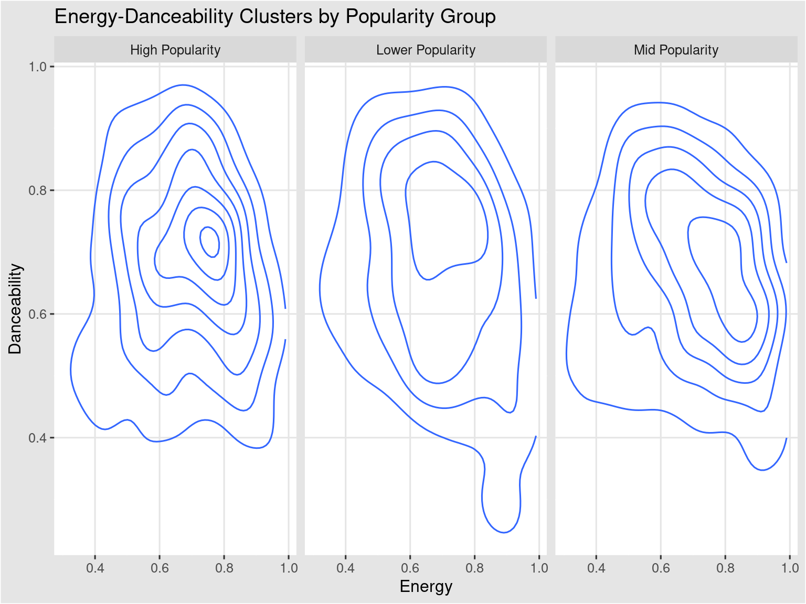
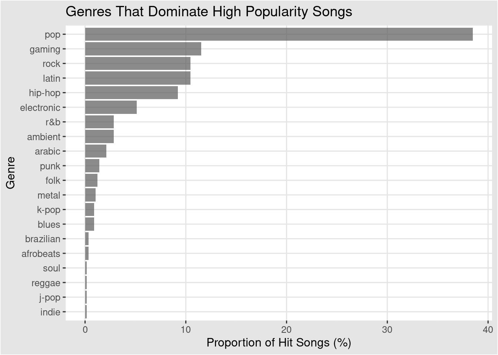

library(tidyverse)
library(ggthemes)Early Data Exploration & Visualization of a Spotify Hit
The purpose of this document is to detail exploratory data exploration and visualization of the primary Spotify hits dataset obtained from Kaggle and organized by Solomon Ameh. Final versions of summarized data and visualizations are subject to change.
Import & Wrangle Data
Here, the necessary packages are loaded, and the Spotify dataset is read from the local directory.
# Import most popular songs
high_popular <- read.csv(
here::here("data", "high_popularity_spotify_data.csv"))The dataset is filtered to retain only variables relevant to answer each question, ensuring a focused and efficient visualization workflow.
# Select variables relevant to the analysis and double check for duplicates of the same track
spotify_clean <- high_popular %>%
select( track_id, track_name, track_artist,
playlist_genre, playlist_subgenre,
track_popularity,
valence, energy, danceability) %>%
distinct() %>% # Remove duplicates
drop_na()Because the research questions utilized to construct this infographic emphasize popularity, songs are classified into popularity groups to streamline faceted visualization. It is important to note that popularity bins were defined based on this author’s judgment and may be revised following further discussion with the instructor.
# Range of 68-100%
# summary() reveals that there is clustering and heavy skew towards lower range of values
summary(spotify_clean$track_popularity) Min. 1st Qu. Median Mean 3rd Qu. Max.
68.00 71.00 75.00 75.81 79.00 100.00 # Visualize right skew
hist(spotify_clean$track_popularity)
# Bin popularity based on dividing scores into three equally sized popularity groups using distribution of popularity values (every 33%)
quantile(spotify_clean$track_popularity, probs = c(0, .33, .66, 1)) 0% 33% 66% 100%
68 72 77 100 # Establish grouping based onn quantile (in thirds) cutoff
spotify_clean <- spotify_clean %>%
mutate(
popularity_group = case_when(
track_popularity <= 72 ~ "Lower Popularity",
track_popularity <= 77 ~ "Mid Popularity",
TRUE ~ "High Popularity"
)
)Exploratory Data Visualizations
The following visualizations were created to observe trends in several components that may contribute to the popularity of Spotify hits such as: emotional enjoyment, certain combinations of energetic and danceability of tracks, and popular genres.
Are hit songs happier?
# Create a summary table for distribution of valence score based on popularity
valence_dist <- spotify_clean %>%
select(popularity_group, valence)# Violin and boxplot overlaid to visualize distribution
valence_dist %>%
ggplot(aes(x = popularity_group, y = valence, fill = popularity_group)) +
geom_violin(trim = F, alpha = 0.3) +
geom_boxplot(width = .1)+
labs(
title = "Are Hit Songs Happier?",
x = "Popularity Group",
y = "Valence (Happiness Score)"
) + guides(fill = "none") +
theme_igray()
# Stacked histograms for valence scores based on popularity group
valence_dist %>%
ggplot(aes(x = valence, fill = popularity_group)) +
geom_histogram(bins = 30, col = "black", alpha = .4) +
#facet_wrap(~ popularity_group) +
labs(
title = "Valence Distribution by Popularity Group",
x = "Valence",
y = "Count"
) + theme_igray()
# Faceted histograms for valence scores based on popularity group
valence_dist %>%
ggplot(aes(x = valence, fill = popularity_group)) +
geom_histogram(bins = 30, col = "black", alpha = .4) +
facet_wrap(~ popularity_group) + guides(fill = "none") +
labs(
title = "Valence Distribution by Popularity Group",
x = "Valence",
y = "Count"
) + theme_igray() 
Do popular songs cluster around certain energy-danceability combinations?
# Create a subset with only the energy and daceability score
energy_dance_df <- spotify_clean %>%
select(energy, danceability, popularity_group)
# Scatter plot of energy score against danceability of a track based on pop group
energy_dance_df %>%
ggplot(aes(x = energy, y = danceability, color = popularity_group)) +
geom_point(alpha = 0.4) +
labs(
title = "Energy vs Danceability by Popularity Group",
x = "Energy",
y = "Danceability",
color = "Popularity Group"
) +
theme_igray()
# Faceted scatter plot of energy-dancebility clustering based on popularity
energy_dance_df %>%
ggplot(aes(x = energy, y = danceability, color = popularity_group)) +
geom_point(alpha = 0.4) +
facet_wrap(~popularity_group) +
guides(color = "none") +
labs(
title = "Energy vs Danceability by Popularity Group",
x = "Energy",
y = "Danceability",
color = "Popularity Group"
) +
theme_igray()
# Faceted density plot of energy-dancebility clustering based on popularity
energy_dance_df %>%
ggplot(aes(x = energy, y = danceability)) +
stat_density_2d() +
facet_wrap(~popularity_group) +
labs(
title = "Energy-Danceability Clusters by Popularity Group",
x = "Energy",
y = "Danceability"
) +
theme_igray()
Which genre dominates Spotify hits?
# Calcuate proportion of popular songs in each genre
genre_hits <- spotify_clean %>%
filter(popularity_group == "High Popularity") %>%
count(playlist_genre) %>% # Count how many popular songs in each genre
mutate(percent_hit_genre = n / sum(n) * 100) # Calculate % of highly popular songs in each genre... double check that it adds to 100% (it does!)
# Horizontal ranked bar chart
genre_hits %>% ggplot(aes(x = reorder(playlist_genre, percent_hit_genre), y = percent_hit_genre)) +
geom_col(alpha = .7) +
coord_flip() +
labs(
title = "Genres That Dominate High Popularity Songs",
x = "Genre",
y = "Proportion of Hit Songs (%)"
) +
theme_igray()
EDA Questions
After completing the above steps, answer the following questions:
- 1. What have you learned about your data? Have any potentially interesting patterns emerged? Point to specific visualizations that you created as you describe your findings.
Based on exploratory data visualization, there is no visually significant difference in the median valence (emotion happiness) scores across different popularity groups. As observed in the overlayed violin and box plot, most hit songs do not appear to be necessarily happier than less popular ones, as the median score remains approximately the same at about 0.5 regardless of success. This may suggest that “highly popular” songs on Spotify feature the same diverse mix of happy and “sad” tones as in any of the other popularity groups, indicating that a song’s emotional mood does not determine its success. The faceted and stacked histograms reveal that valence scores are widely distributed across the entire emotional range for all popularity groups with the highest frequency of songs clustering around the neutral scoring of 0.4-0.5. Because the distribution shape is rather consistent across the high, mid, and lower popularity groups, it is visually clear that a track’s specific happiness level does not dictate/impact its commercial success on Spotify (ex. streaming success).
The visual analysis of energy and danceability reveals that while tracks on Spotify lean towards high intensity and rhythmic patterns, high popularity hits are much more concentrated within a specific, tighter range. As indicated in the scatterplots and density plot, the most successful songs cluster tightly around a score of 0.7-0.8 for both metrics, suggesting there may be a standardized formula for commercial appeal in the music industry that favors energetic and danceable tracks. In contrast, low-popular tracks were more scattered and occupied a wider variety of energy and danceability combinations; less popular hits had low energetic scores of 0 and generally low danceability. Overall, there is a clear weak positive correlation between energy and danceability across all popularity groups; however, as popularity increases, the diversity of energetic-danceability pairs decrease in favor of a predictable high-energy rhythm.
- 2. In FPM #1, you outlined some questions that you wanted to answer using these data. Have you made any strides towards answering those questions? If yes, how so? If no, what next steps do you need to take (e.g. I need to create X plot type, I still need to track down Y data, I need to restructure existing data so that you can visualize it in Z ways, etc.)? Have any new questions emerged?
The exploratory data visualizations in this document provide initial insight into whether popular songs cluster around specific energy–danceability combinations and which genres are most prevalent among Spotify’s highest-popularity hits. The scatterplot and density plot indicate that highly popular songs tend to be both energetic and highly danceable. Additionally, pop is the most common genre within the high-popularity group, while emotional valence does not appear to play a significant role in distinguishing the most popular songs from other hits.
These findings motivated two follow up questions: (1) How does genre composition differ across popularity groups and which genres dominate Spotify hits overall? & (2) Which artists tend to dominate tracks within each popularity group? To address these questions, spotify_clean must be reorganized and examine genre distributions using the playlist_genre variable, as well as assessing artist representation across popularity categories.
- 3. What challenges do you foresee encountering with your data? These can be data wrangling and / or visualization challenges.
There may be challenges with identifying the most dominant artist across popularity groups as artists can appear multiple times within the same track (ex. featured artists), which may lead to double counting of the same artist if not handled correctly. Additionally, genre classification may present challenges because songs are assigned to broad playlist genres that can oversimplify musical style and hide subgenre differences.
Overplotting in scatterplots (ex. relating two metrics for track success) can make it difficult to distinguish dense clouds/regions of points, particularly when examining large numbers of tracks. Choosing appropriate bin widths for histograms or smoothing parameters for density plots may also affect the apparent patterns in the data. Comparing genre distributions across popularity groups may require careful normalization (ex. utilizing proportions rather than actual observations) to ensure fair comparisons when there are significant differences in group sizes.